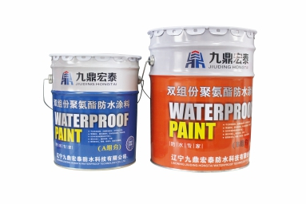

当前位置：
当前位置：
产品概述
PUM双组分聚氨酯防水涂料是由A、B两组份反应固化成膜，A组份是以聚醚和多异氰酸酯等原料，经过聚合反应生成的含有端异氰酸基的透明至淡黄色的粘稠液体；B组份是以交联剂、促进剂、增韧剂、增粘剂、防霉剂、填充剂和颜料等混合加工而成的膏状物。使用时将A、B组份按一定比例混合，搅拌均匀后，刮涂在施工基面上，经数小时后反应固化富有弹性、坚韧又有耐久性的防水涂膜。
产品图片

产品特性
● 不含煤焦油、有机溶剂、莫卡（MOCA）等有毒有害物质。
● 常温固化，防水层无接缝、平整光滑，与基层粘接牢固。
● 在形状复杂的部位易于施工，效果优于卷材类。
● 液态冷施工，操作简单、方便。
● 使用寿命长，耐候、耐老化，耐油污及酸碱，适用范围广。
● 可在迎水面及背水面使用。
执行标准
GB/T19250-2013 聚氨酯防水涂料
| 序号 | 项目 | Ⅰ | Ⅱ | Ⅲ | |
|---|---|---|---|---|---|
| 1 | 固体含量/%≥ | 单组分 | 85 | ||
| 多组分 | 92 | ||||
| 2 | 拉伸强度/MPa≥ | 2.0 | 6.0 | 12.0 | |
| 3 | 断裂延伸率/%≥ | 500 | 450 | 250 | |
| 4 | 低温弯折性/℃ | -35无裂纹 | |||
| 5 | 表干时间/h≤ | 12 | |||
应用领域
该产品广泛应用于铁路、隧道、桥梁、轨道、涵洞、水池、屋面、地下、厕浴间等隐蔽防水、防渗工程。